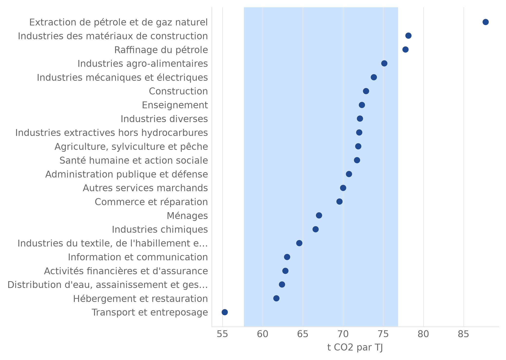
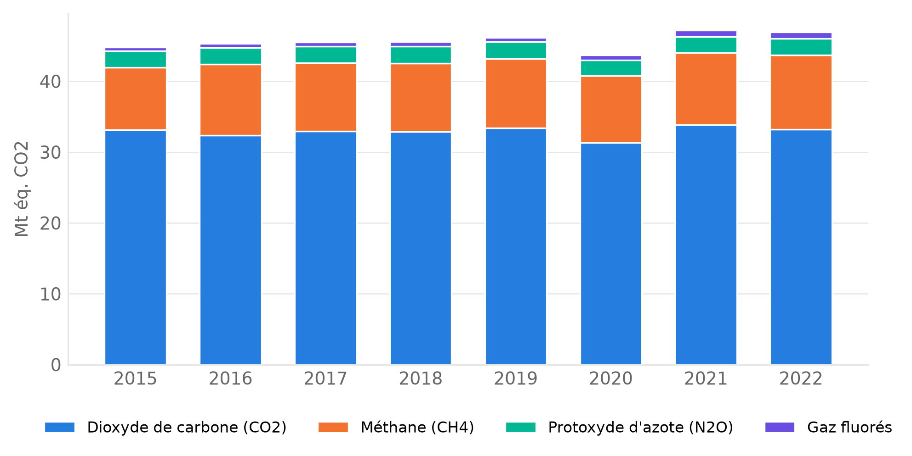
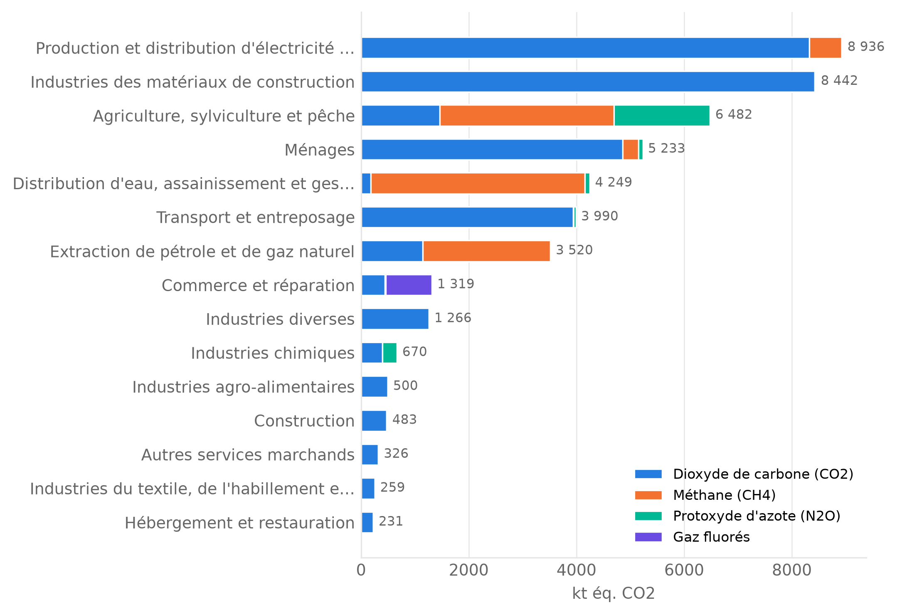
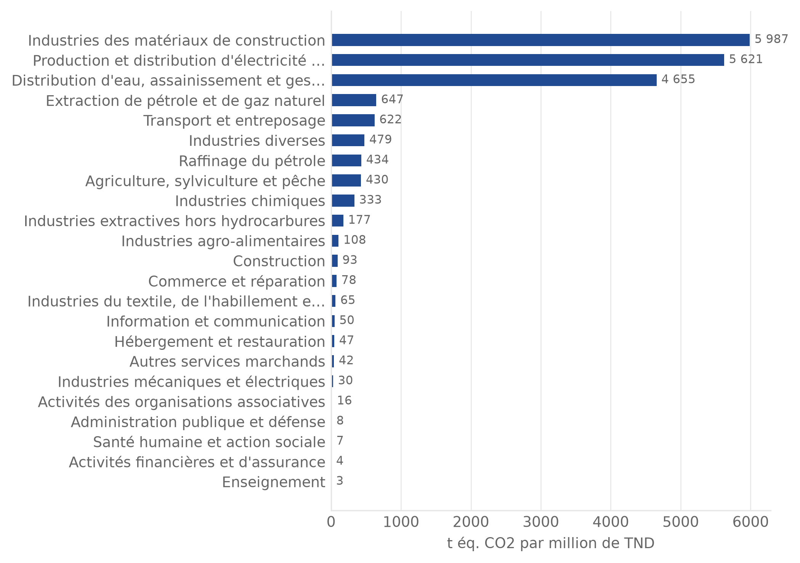

| Script | Objet |
|---|---|
| extract/02_extract_crt_inventory.py | Tableaux communs de notification de l'inventaire des gaz à effet de serre |
| extract/03_extract_supply_use_tables.py | Tableaux des ressources et des emplois des comptes nationaux |
| pefa/11_build_activity_keys.py | Clés du transport routier et du tertiaire (des comptes de l'énergie) |
| aea/20_prepare_ghg_inventory.py | Émissions par catégorie et par gaz, périmètre et codes de l'outil |
| aea/21_build_conversion_matrix.py | Matrice de conversion tunisienne des catégories de l'inventaire vers les activités |
| aea/22_compile_aea_tables.py | Émissions par activité, avec ajustements de résidence, vérifiées avec I2A |
| aea/23_bridge_and_indicators.py | Passage à l'inventaire, vraisemblance et intensités |
| aea/24_export_aea.py | Classeurs Excel en anglais, en français et en arabe |
| report/30_publish_tables.py | Tableaux et libellés pour les documents et l'explorateur de données |
Comptes des émissions atmosphériques de la Tunisie
Gaz à effet de serre par branche et ménages : concepts, méthodes de compilation et résultats, 2015 à 2022
Résumé
Les comptes des émissions atmosphériques (AEA) enregistrent les gaz à effet de serre émis par chaque branche des comptes nationaux et par les ménages, selon les mêmes règles que les comptes nationaux. Ils répondent à une question que l’inventaire des gaz à effet de serre, organisé par procédé technique, ne traite pas directement : quelles parties de l’économie produisent les émissions, et combien elles émettent par dinar de production. Ce document expose les concepts, décrit chaque étape d’une compilation reproductible des comptes de 2015 à 2022 et présente les premiers résultats.
En 2022, les branches résidentes et les ménages ont émis 46,9 millions de tonnes d’équivalent CO2. Le dioxyde de carbone représentait 71 % du total et le méthane 22 %. Les principaux émetteurs étaient la branche « production et distribution d’électricité et de gaz », la branche « industries des matériaux de construction » et la branche « agriculture, sylviculture et pêche », et les ménages ont émis 11 % du total, surtout par leurs voitures et leurs logements. Un tableau de passage concilie les comptes avec l’inventaire national, et la compilation reproduit le convertisseur des comptes des émissions atmosphériques du FMI (I2A) à 7e-12 kilotonne près.
1 Introduction
La Tunisie déclare ses émissions de gaz à effet de serre à la Convention-cadre des Nations unies sur les changements climatiques (CCNUCC) dans un inventaire national, coordonné par l’Agence nationale pour la maîtrise de l’énergie (ANME) pour l’énergie et les procédés industriels, par le ministère de l’Agriculture pour l’agriculture et l’utilisation des terres, et par l’Office national de l’assainissement (ONAS) pour les déchets (Besbes, 2026). L’inventaire suit les lignes directrices du Groupe d’experts intergouvernemental sur l’évolution du climat (GIEC) et classe les émissions par source : combustion dans les industries énergétiques, transport routier, fermentation entérique du bétail, décharges, et ainsi de suite (Intergovernmental Panel on Climate Change, 2006).
Cette classification sert bien l’objet de l’inventaire, puisqu’elle suit les procédés qui causent les émissions et les méthodes qui les estiment. Elle ne dit pas quelles unités économiques émettent. Les émissions du transport routier viennent des ménages qui conduisent leur voiture, des camions de l’industrie agro-alimentaire, des autobus et des taxis de la branche transport. La combustion des « autres secteurs » couvre les commerces, les hôtels, les bureaux et les logements. Les comptes des émissions atmosphériques réorganisent les mêmes émissions par branche des comptes nationaux et pour les ménages (Eurostat, 2015; United Nations et al., 2014). Ainsi enregistrées, les émissions peuvent être rapprochées de la production, de la valeur ajoutée, de l’emploi et des comptes de l’énergie, et alimenter des modèles économiques.
Le Fonds monétaire international (FMI) a mis au point un outil Excel pour cette conversion, le convertisseur des comptes des émissions atmosphériques, appelé I2A (International Monetary Fund, 2026; Pegoue, 2026). Ce document en suit la logique pas à pas. Les calculs sont effectués par des scripts Python du dossier https://github.com/renatovargas/tun-pefa-aea/tree/main/scripts, présentés au tableau 1. Chaque étape de la partie Méthodes renvoie à la notice de son script à l’annexe I. Les comptes des émissions reprennent deux clés de répartition des comptes de l’énergie, décrites dans le document compagnon sur les comptes physiques des flux d’énergie.
2 Concepts
2.1 Les émissions, des flux de résidus
Le SCEE traite les émissions comme des flux de résidus : des substances rejetées par l’activité économique, qui quittent l’économie et entrent dans l’environnement (United Nations et al., 2014, sect. 3.6). Les comptes des émissions atmosphériques sont la partie de ces comptes qui concerne les gaz et les particules rejetés dans l’atmosphère. Ils suivent les règles comptables des comptes nationaux. Les émissions sont enregistrées pour les unités économiques qui les génèrent, c’est-à-dire les branches, classées comme dans les comptes nationaux, et les ménages, en tant que consommateurs (Eurostat, 2015, paragr. 32 à 38). Les émissions des ménages en tant que producteurs, par exemple une exploitation agricole familiale, relèvent de la branche concernée.
2.2 Les gaz à effet de serre et leur unité commune
Les comptes couvrent les gaz à effet de serre de l’inventaire. Le dioxyde de carbone (CO2) provient surtout de la combustion de combustibles fossiles et de quelques procédés industriels comme la fabrication du ciment. Le méthane (CH4) provient du bétail, des décharges et des fuites de gaz naturel. Le protoxyde d’azote (N2O) provient surtout des sols agricoles et du fumier. Les gaz fluorés (HFC, PFC, SF6 et NF3) sont des gaz industriels utilisés dans la réfrigération, la climatisation et les équipements électriques. Chaque gaz réchauffe le climat à un degré différent ; les émissions sont donc converties en équivalent CO2 avec les potentiels de réchauffement global à 100 ans. La Tunisie, comme la plupart des pays, utilise les valeurs du cinquième rapport d’évaluation du GIEC, selon lesquelles une tonne de méthane compte pour 28 tonnes de CO2 et une tonne de protoxyde d’azote pour 265 (Intergovernmental Panel on Climate Change, 2013).
2.3 Territoire et résidence
L’inventaire enregistre les émissions qui ont lieu sur le territoire national, quel qu’en soit l’auteur. Les comptes enregistrent les émissions des unités résidentes, où qu’elles aient lieu (Eurostat, 2015, paragr. 33 à 37). Une compagnie aérienne tunisienne qui vole de Paris à Montréal émet dans les comptes tunisiens, alors qu’un camion étranger qui traverse la Tunisie n’y émet pas. La différence concerne surtout le transport international. Les comptes la rendent explicite dans un tableau de passage, qui part du total des comptes, retranche les émissions des résidents à l’étranger, ajoute celles des non-résidents sur le territoire et aboutit au total de l’inventaire (Eurostat, 2015, paragr. 227 à 230). La figure 1 montre comment les deux totaux s’articulent.
flowchart LR AEA["Total des comptes<br/>(branches + ménages,<br/>principe de résidence)"] --> M1["moins les résidents à l'étranger<br/>(transport aérien et maritime)"] M1 --> P1["plus les non-résidents<br/>sur le territoire"] P1 --> INV["Total de l'inventaire<br/>hors UTCATF<br/>(principe territorial)"] INV --> L["plus utilisation des terres,<br/>changement d'affectation<br/>des terres et foresterie"] L --> NET["Total net<br/>de l'inventaire"]
2.4 Ce que les comptes laissent de côté
Deux éléments de l’inventaire restent en dehors des comptes. Les émissions et absorptions de l’utilisation des terres, du changement d’affectation des terres et de la foresterie (UTCATF) ne sont pas attribuées à l’activité économique dans les comptes et n’apparaissent que dans le tableau de passage (Eurostat, 2015, paragr. 269). En Tunisie, ce secteur est un puits net, avec -10,8 millions de tonnes d’équivalent CO2 en 2022, surtout grâce aux forêts. Le dioxyde de carbone issu de la combustion de biomasse, comme le bois de feu, est un élément pour mémoire de l’inventaire, car son carbone a été prélevé récemment dans l’atmosphère. Il est aussi tenu à part dans les comptes (4,4 millions de tonnes en 2022).
3 Sources de données
L’inventaire des gaz à effet de serre est la source principale. La Tunisie le déclare dans les tableaux communs de notification (CRT), un classeur Excel par année. Chaque classeur contient une feuille Data qui rassemble toutes les valeurs déclarées en format long : données d’activité en térajoules et émissions en kilotonnes, par catégorie, combustible et gaz, soit environ douze mille lignes par année. Une feuille de synthèse, Summary2, donne les totaux par catégorie en équivalent CO2. Les comptes couvrent 2015 à 2022.
Un second fichier, Tunisia_UNFCCC.xlsx, a été préparé dans la présentation de l’outil I2A. Il contient les principales catégories en kilotonnes de chaque gaz. Le pipeline construit plutôt ses données d’entrée à partir des classeurs CRT, plus détaillés, qui comprennent les gaz fluorés et donnent les équivalents CO2. Les totaux par secteur de ce fichier concordent avec les tableaux CRT (tableau 2), ce qui confirme que les deux décrivent le même inventaire.
Les tableaux des ressources et des emplois de l’INS fournissent les 24 branches des comptes, les clés de répartition, et la production et la valeur ajoutée de chaque branche. Les estimations de l’OCDE des émissions du transport aérien et maritime, livrées avec l’outil I2A, fournissent les émissions des compagnies aériennes et maritimes résidentes pour l’ajustement de résidence (OECD, 2024).
4 Méthodes
4.1 Préparation de l’inventaire
Le script 02_extract_crt_inventory.py empile les feuilles Data, retire les lignes en double et compare les émissions additionnées par catégorie aux totaux de Summary2. Elles concordent pour chaque catégorie, gaz et année, à une exception près : le protoxyde d’azote de la catégorie 1.B.2.b.ii, déclaré dans Data à partir de 2019 mais non compté dans Summary2, soit un écart d’au plus 0,24 kilotonne d’équivalent CO2.
Le script 20_prepare_ghg_inventory.py construit ensuite un tableau des émissions par année, catégorie et gaz. Le CO2, le CH4 et le N2O viennent de Data et sont pondérés par leurs potentiels de réchauffement. Les gaz fluorés sont déclarés dans Data gaz par gaz, mais en équivalent CO2 seulement par catégorie industrielle dans Summary2 ; leurs totaux viennent donc de Summary2. Chaque ligne est marquée comme faisant partie du total de l’inventaire, de l’UTCATF ou des éléments pour mémoire. Le total de l’inventaire, UTCATF compris, égale le total net de Summary2 une fois le protoxyde d’azote ci-dessus pris en compte.
L’outil I2A connaît une liste de codes de catégories qui s’arrête au cinquième niveau de la nomenclature CRT, alors que la feuille Data tunisienne va parfois plus loin, par exemple par sous-catégorie d’animaux. Chaque catégorie reçoit donc le code le plus détaillé de la liste de l’outil dont elle relève.
| Secteur | Description | Gaz dans le fichier | Fichier préparé | Tableaux CRT |
|---|---|---|---|---|
| 1 | Energy | CH4 | 127,9 | 127,9 |
| 1 | Energy | CO2 | 27 068,6 | 27 068,6 |
| 1 | Energy | N20 | 1,0 | 1,0 |
| 2 | Industrial Processes and Product Use | CH4 | 0,0 | 0,0 |
| 2 | Industrial Processes and Product Use | CO2 | 5 006,3 | 5 006,3 |
| 2 | Industrial Processes and Product Use | N20 | 1,0 | 1,0 |
| 3 | Agriculture | CH4 | 105,6 | 105,6 |
| 3 | Agriculture | CO2 | 0,0 | 0,0 |
| 3 | Agriculture | N20 | 6,4 | 6,4 |
| 5 | Waste | CH4 | 141,7 | 141,7 |
| 5 | Waste | CO2 | 26,9 | 26,9 |
| 5 | Waste | N20 | 0,4 | 0,4 |
NoteQuestion ouverte
Le fichier Tunisia_UNFCCC.xlsx écrit le protoxyde d’azote « N20 », déclare des kilotonnes de chaque gaz plutôt que des équivalents CO2, omet certaines sous-catégories et ne contient pas de gaz fluorés. S’il doit servir à d’autres usages, il gagnerait à être revu avec l’équipe de l’inventaire. Le traitement du protoxyde d’azote de la catégorie 1.B.2.b.ii à partir de 2019 mérite aussi d’être clarifié.
4.2 Des catégories de l’inventaire aux activités économiques
La matrice de conversion donne, pour chaque catégorie de l’inventaire, la part de ses émissions qui revient à chaque activité économique. L’outil I2A est livré avec une matrice par défaut par section de la CITI et pour les ménages, qui suit la correspondance du manuel d’Eurostat (Eurostat, 2015, paragr. 12; International Monetary Fund, 2026). Le script 21_build_conversion_matrix.py construit une matrice tunisienne par les 24 branches du TRE et les ménages, à partir de la table crt_to_activities.csv. Chaque ligne de cette table donne un préfixe de codes CRT, une activité et une raison. Une catégorie prend la ligne dont le préfixe est le plus long parmi ceux qui correspondent à son code ; un préfixe court (« 3 » pour l’agriculture) couvre ainsi tout un secteur, et un préfixe plus long le remplace pour une sous-catégorie.
La plupart des catégories relèvent d’une seule activité : la production publique d’électricité de l’électricité et du gaz (35), la fabrication du ciment des matériaux de construction (23), la fermentation entérique de l’agriculture (01), les décharges des services de l’eau et des déchets (36). Deux catégories ont besoin de clés, et elles reprennent celles des comptes de l’énergie, pour que les deux comptes répartissent ces secteurs de la même façon. Le transport routier (1.A.3.b) est partagé entre les branches et les ménages au prorata de leurs achats de produits pétroliers raffinés, et la combustion dans le commerce et les services publics (1.A.4.a) entre les branches de services au prorata de leurs achats d’électricité et de gaz. En 2022, les ménages reçoivent 34 % des émissions du transport routier.
Le tableau 3 énumère les catégories que la matrice tunisienne attribue à une autre section que la matrice par défaut de l’outil, avec leurs émissions de 2022.
| Catégorie | Émissions | Défaut | Tunisie | Activités tunisiennes | Note |
|---|---|---|---|---|---|
| 1.A.1.c.i | 792,4 | C | B | 06 | Autre section |
| 1.A.2.g.iii | 15,7 | C | B | 07 | Autre section |
| 1.A.3.b.i | 4 271,8 | H | HH | clé : transport routier | Autre section |
| 1.A.3.b.ii | 1 884,7 | H | HH | clé : transport routier | Autre section |
| 1.A.3.b.iii | 1 349,4 | H | HH | clé : transport routier | Autre section |
| 1.A.3.b.iv | 8,0 | H | HH | clé : transport routier | Autre section |
| 1.A.4.a.i | 765,3 | F | Other | clé : tertiaire | Autre section |
| 1.A.4.b.ii | 2 646,7 | F | HH | HH | Autre section |
| 1.B.1.b | 284,1 | B | A | 01 | Autre section |
| 1.B.2.b.iv | 495,3 | H | D | 35 | Autre section |
| 1.B.2.b.v | 99,6 | H | D | 35 | Autre section |
| 2.F.1.a | 862,8 | C | Other | 45 | Autre section |
| 2.G.1 | 9,0 | C | D | 35 | Autre section |
| 3.D.1.a | 294,0 | – | A | 01 | Sans facteur dans la matrice par défaut |
| 3.D.1.b.i | 299,6 | – | A | 01 | Sans facteur dans la matrice par défaut |
| 3.D.1.c | 453,8 | – | A | 01 | Sans facteur dans la matrice par défaut |
| 3.D.1.d | 63,6 | – | A | 01 | Sans facteur dans la matrice par défaut |
| 3.D.2.a | 172,1 | – | A | 01 | Sans facteur dans la matrice par défaut |
| 3.D.2.b | 198,7 | – | A | 01 | Sans facteur dans la matrice par défaut |
Trois groupes se distinguent. Le transport routier et la combustion résidentielle passent du transport et de la construction aux ménages, comme le veulent les comptes. Le transport et la distribution du gaz naturel passent du transport à la branche électricité et gaz, qui exploite le réseau en Tunisie. Enfin, la matrice par défaut de l’outil n’a pas de facteurs pour les sols agricoles (3.D) ; leurs émissions, 1 482 kilotonnes d’équivalent CO2 en 2022, seraient perdues sans règle tunisienne. La matrice tunisienne les attribue à l’agriculture.
NoteQuestion ouverte
Les choix qui s’écartent de la matrice par défaut gagneraient à être validés avec l’INS et l’ANME, en particulier le partage du transport routier entre les branches et les ménages, l’attribution de la combustion du commerce aux branches de services plutôt qu’à la construction, et le traitement des gaz fluorés de la réfrigération commerciale.
4.3 Compilation des comptes et ajustement de résidence
Le script 22_compile_aea_tables.py applique la matrice à l’inventaire. Comme pour les comptes de l’énergie, il le fait deux fois : une fois en appelant la fonction I2A de l’outil sans la modifier, et une fois en appliquant chacune de ses règles de façon explicite. La version explicite produit les comptes, et le script s’arrête si les deux diffèrent de plus de 10-9 kilotonne. Les règles sont les suivantes.
- Données de l’inventaire. L’inventaire est présenté comme la feuille d’inventaire de l’outil : une ligne par gaz et catégorie, une colonne par année, en kilotonnes d’équivalent CO2.
- Répartition. Chaque valeur est multipliée par les facteurs de sa catégorie dans la matrice. Une catégorie sans facteur ne reçoit rien ; c’est pourquoi les sols agricoles ont eu besoin d’une règle tunisienne.
- Transport aérien. L’OCDE estime les émissions des compagnies aériennes résidentes sur les vols intérieurs et à l’étranger (OECD, 2024). Lorsque l’estimation de l’OCDE pour les vols intérieurs est inférieure à l’aviation intérieure de l’inventaire, la différence est attribuée aux non-résidents sur le territoire. Les émissions des compagnies résidentes à l’étranger sont ajoutées au transport aérien et inscrites comme élément de passage.
- Transport maritime. Lorsque l’estimation de l’OCDE pour les navires résidents dépasse la navigation intérieure de l’inventaire, la différence est ajoutée à l’activité.
- Totaux. Le total des comptes additionne les branches et les ménages, et le total des gaz à effet de serre additionne les quatre gaz.
Avec la matrice par défaut, avec et sans les données de l’OCDE, et avec la matrice tunisienne pour chaque année, la version explicite concorde avec l’outil à 7e-12 kilotonne près (tableau 4).
| Essai | Années | Écart maximal (kt éq. CO2) |
|---|---|---|
| Matrice par défaut, sans les données de l'OCDE | toutes | 7.3e-12 |
| Matrice par défaut, avec les données de l'OCDE | toutes | 7.3e-12 |
| Matrice tunisienne, avec les données de l'OCDE | 2015 | 7.3e-12 |
| Matrice tunisienne, avec les données de l'OCDE | 2016 | 1.8e-12 |
| Matrice tunisienne, avec les données de l'OCDE | 2017 | 3.6e-12 |
| Matrice tunisienne, avec les données de l'OCDE | 2018 | 7.3e-12 |
| Matrice tunisienne, avec les données de l'OCDE | 2019 | 7.3e-12 |
| Matrice tunisienne, avec les données de l'OCDE | 2020 | 3.6e-12 |
| Matrice tunisienne, avec les données de l'OCDE | 2021 | 7.3e-12 |
| Matrice tunisienne, avec les données de l'OCDE | 2022 | 7.3e-12 |
NoteQuestion ouverte
L’estimation de l’OCDE pour les navires exploités par des résidents (546 kilotonnes de CO2 en 2022) est bien supérieure aux soutes maritimes de l’inventaire (24 kilotonnes), et elle manque avant 2019, ce qui crée une rupture de série. Il serait utile de la confronter aux données sur la flotte tunisienne et son ravitaillement à l’étranger détenues par l’INS, l’ONEM et l’Office de la marine marchande et des ports.
4.4 Tableau de passage et contrôles
Le script 23_bridge_and_indicators.py construit le tableau de passage du tableau 5. Partant du total des comptes, il retranche les émissions des transporteurs résidents à l’étranger, ajoute celles des non-résidents sur le territoire et doit aboutir au total de l’inventaire hors UTCATF. L’écart est inférieur à 10-6 kilotonne pour chaque année et chaque gaz. Deux particularités de l’outil méritent d’être signalées, et le pipeline les traite toutes deux. L’écart positif du transport maritime est ajouté à l’activité sans élément de passage correspondant ; le pipeline l’enregistre donc comme résidents à l’étranger par voie maritime. Et le total d’inventaire propre à l’outil additionne les éléments de passage sans leur signe ; le tableau de passage utilise la somme signée.
| Élément | 2015 | 2016 | 2017 | 2018 | 2019 | 2020 | 2021 | 2022 |
|---|---|---|---|---|---|---|---|---|
| Émissions des comptes AEA (unités résidentes) | 44 797 | 45 299 | 45 513 | 45 574 | 46 158 | 43 690 | 47 213 | 46 921 |
| Moins : transport aérien des résidents à l'étranger | 556 | 592 | 700 | 808 | 745 | 246 | 288 | 564 |
| Moins : transport maritime des résidents à l'étranger | 0 | 0 | 0 | 0 | 498 | 502 | 540 | 546 |
| Plus : transport aérien des non-résidents sur le territoire | 0 | 0 | 0 | 0 | 4 | 0 | 0 | 0 |
| Plus : transport maritime des non-résidents sur le territoire | 0 | 0 | 0 | 0 | 0 | 0 | 0 | 0 |
| Autres ajustements | −5 | −4 | −4 | −2 | 0 | −1 | −4 | 0 |
| Inventaire national hors UTCATF | 44 236 | 44 704 | 44 809 | 44 765 | 44 919 | 42 941 | 46 381 | 45 812 |
| Utilisation des terres, changement d'affectation des terres et foresterie (UTCATF) | −9 944 | −9 956 | −10 192 | −10 341 | −10 564 | −10 563 | −10 500 | −10 784 |
| Inventaire national y compris UTCATF | 34 292 | 34 748 | 34 616 | 34 424 | 34 354 | 32 378 | 35 881 | 35 028 |
Le script vérifie aussi la répartition au regard des comptes de l’énergie. Pour chaque activité, le CO2 émis par la combustion, divisé par l’énergie fossile que les comptes de l’énergie lui attribuent, donne un facteur d’émission implicite, en tonnes de CO2 par térajoule. Les facteurs implicites par combustible de l’inventaire vont de 57,7 pour le gaz naturel à 76,8 pour les combustibles liquides en 2022 ; le facteur d’une activité devrait donc se situer dans cet intervalle ou à proximité. La figure 2 montre le résultat.

La plupart des activités se situent dans la bande. Les activités qui en sortent signalent des différences de classement entre le bilan énergétique et l’inventaire, par exemple pour la consommation propre de la branche énergie et pour les autoproducteurs d’électricité, qu’il serait utile d’examiner avec l’ONEM et l’ANME.
4.5 Indicateurs et export
Les intensités d’émission divisent les émissions par la production ou la valeur ajoutée aux prix courants, en tonnes d’équivalent CO2 par million de dinars. Pour les ménages, le dénominateur est leur dépense de consommation finale, comme le propose le manuel de l’outil I2A (International Monetary Fund, 2026). Le script 24_export_aea.py écrit les comptes dans des classeurs Excel en anglais, en français et en arabe, avec le tableau long, le tableau de passage, les comptes de chaque année par activité et par gaz, les émissions par source et activité, et les indicateurs.
5 Résultats
5.1 Émissions dans le temps et par gaz
La figure 3 montre les émissions des unités résidentes par gaz. Elles sont restées proches de 45 millions de tonnes d’équivalent CO2 sur la période, avec un creux en 2020, lorsque l’activité et les déplacements ont reculé pendant la pandémie de COVID-19.

5.2 Des secteurs de l’inventaire à l’économie
La figure 4 suit les émissions de 2022 depuis les secteurs de l’inventaire jusqu’aux sections de l’économie qui les émettent. La combustion se répartit dans toute l’économie. Les procédés industriels viennent presque entièrement de l’industrie manufacturière, surtout du ciment. Les émissions de l’agriculture restent dans l’agriculture, et celles des déchets vont à la branche de l’eau et des déchets. L’ajustement de résidence ajoute au transport les émissions des transporteurs tunisiens à l’étranger.
5.3 Émissions par activité
La figure 5 classe les émetteurs de 2022. L’électricité et le gaz viennent en tête, suivis des matériaux de construction, où les fours à ciment émettent à la fois par leur combustible et par la transformation chimique du calcaire. L’agriculture vient ensuite, par le bétail et les sols, puis les ménages. Les services de l’eau et des déchets doivent leur rang aux décharges.

5.4 Intensité d’émission
Toutes branches confondues, l’économie a émis 326 tonnes d’équivalent CO2 par million de dinars de valeur ajoutée en 2022. La figure 6 montre combien cette moyenne est inégalement répartie. Quelques branches, les matériaux de construction, l’électricité, l’eau et les déchets, et l’agriculture, émettent beaucoup plus par dinar que les autres. Les politiques qui modifient la production de ces branches, ou la technologie qu’elles utilisent, ont le plus d’effet sur les émissions nationales.

5.5 Comptes par activité et par gaz
| Activité | Dioxyde de carbone (CO2) | Méthane (CH4) | Protoxyde d'azote (N2O) | Gaz fluorés | Total des gaz à effet de serre |
|---|---|---|---|---|---|
| Agriculture, sylviculture et pêche | 1 459,3 | 3 239,3 | 1 783,1 | 0,0 | 6 481,6 |
| Extraction de pétrole et de gaz naturel | 1 148,0 | 2 368,9 | 2,8 | 0,0 | 3 519,7 |
| Industries extractives hors hydrocarbures | 222,2 | 0,9 | 4,0 | 0,0 | 227,2 |
| Industries agro-alimentaires | 495,4 | 0,9 | 3,5 | 0,0 | 499,9 |
| Industries du textile, de l'habillement et du cuir | 256,7 | 0,5 | 2,1 | 0,0 | 259,3 |
| Raffinage du pétrole | 144,9 | 1,6 | 0,2 | 0,0 | 146,8 |
| Industries chimiques | 399,3 | 0,9 | 270,0 | 0,0 | 670,2 |
| Industries des matériaux de construction | 8 422,9 | 8,6 | 10,5 | 0,0 | 8 441,9 |
| Industries mécaniques et électriques | 202,0 | 0,7 | 3,2 | 0,0 | 205,9 |
| Industries diverses | 1 261,6 | 1,2 | 2,7 | 0,0 | 1 265,6 |
| Production et distribution d'électricité et de gaz | 8 324,6 | 598,7 | 3,8 | 9,0 | 8 936,1 |
| Distribution d'eau, assainissement et gestion des déchets | 184,4 | 3 967,7 | 96,5 | 0,0 | 4 248,6 |
| Construction | 472,3 | 2,1 | 9,1 | 0,0 | 483,5 |
| Commerce et réparation | 446,9 | 2,4 | 6,6 | 862,8 | 1 318,7 |
| Transport et entreposage | 3 937,9 | 10,0 | 42,1 | 0,0 | 3 990,1 |
| Hébergement et restauration | 228,2 | 1,9 | 0,4 | 0,0 | 230,5 |
| Information et communication | 199,3 | 1,5 | 0,8 | 0,0 | 201,7 |
| Activités financières et d'assurance | 24,5 | 0,2 | 0,1 | 0,0 | 24,8 |
| Administration publique et défense | 129,3 | 0,7 | 2,1 | 0,0 | 132,1 |
| Enseignement | 30,1 | 0,1 | 0,6 | 0,0 | 30,8 |
| Santé humaine et action sociale | 40,5 | 0,2 | 0,7 | 0,0 | 41,4 |
| Autres services marchands | 319,6 | 1,7 | 4,9 | 0,0 | 326,1 |
| Activités des organisations associatives | 5,2 | 0,0 | 0,1 | 0,0 | 5,3 |
| Ménages | 4 856,1 | 294,9 | 82,1 | 0,0 | 5 233,1 |
6 Limites
Ces comptes sont une première compilation, provisoire. La répartition du transport routier et de la combustion du commerce repose sur des achats en valeur plutôt que sur des données physiques. L’ajustement de résidence s’appuie sur les estimations de l’OCDE, qui sont modélisées et non observées et qui, pour le transport maritime, ne commencent qu’en 2019. Les gaz fluorés sont répartis par catégorie, sans détail par espèce. Les polluants atmosphériques autres que les gaz à effet de serre, comme le dioxyde de soufre ou les particules, ne sont pas couverts, car l’inventaire en contient peu. Les intensités aux prix courants mêlent volumes et prix. Chacun de ces points peut être amélioré à mesure que des données plus détaillées deviennent disponibles, et le pipeline permet de recompiler simplement les comptes après toute modification d’une table de correspondance.
Références
Besbes, M. (2026, juin). Tunisian GHG Inventory and Climate Policy. Presentation at the virtual workshop on energy and air emissions accounts, National Agency for Energy Conservation, Tunisia.
Eurostat. (2015). Manual for Air Emissions Accounts: 2015 Edition. Luxembourg: Publications Office of the European Union.
Intergovernmental Panel on Climate Change. (2006). 2006 IPCC Guidelines for National Greenhouse Gas Inventories. Hayama: Institute for Global Environmental Strategies.
Intergovernmental Panel on Climate Change. (2013). Climate Change 2013: The Physical Science Basis. Contribution of Working Group I to the Fifth Assessment Report of the Intergovernmental Panel on Climate Change. Cambridge: Cambridge University Press.
International Monetary Fund. (2026). Air Emissions Account Converter: A Framework for Converting Greenhouse Gas Emissions Inventories into Air Emissions Account. User Manual (Version 0.0). (S.l.): Statistics Department, Real Sector Division.
OECD. (2024). Air and Maritime Transport CO2 Emissions. OECD Data Explorer, datasets DSD_AIR_TRANSPORT and DSD_MARITIME_TRANSPORT.
Pegoue, A. (2026). Air Emissions Account Converter (I2A): Excel workbook and Python function I2A. International Monetary Fund, Statistics Department. Repéré à https://github.com/renatovargas/tun-pefa-aea/tree/main/imf-tools/i2a
United Nations, European Commission, Food and Agriculture Organization of the United Nations, International Monetary Fund, Organisation for Economic Co-operation and Development, & World Bank. (2014). System of Environmental-Economic Accounting 2012: Central Framework. New York: United Nations.
Annexe I. Scripts du pipeline
Cette annexe décrit chaque script utilisé par les comptes des émissions, dans l’ordre de son exécution. Le lien sous chaque nom ouvre son code sur GitHub. Les commentaires du code sont en anglais, suivis de leur traduction française.
02_extract_crt_inventory.py
Ce script empile la feuille Data des huit classeurs CRT, ajoute l’année, convertit les valeurs en nombres et retire les lignes en double. Il compare les émissions sommées par catégorie à la feuille Summary2 et écrit crt.parquet.
20_prepare_ghg_inventory.py
Ce script construit les émissions par année, catégorie et gaz, en kilotonnes et en équivalent CO2, prend les gaz fluorés dans Summary2, marque le périmètre de chaque ligne (inventaire, UTCATF, élément pour mémoire) et donne à chaque catégorie son code dans l’outil I2A. Il contrôle le total de l’inventaire avec Summary2 et compare le fichier préparé pour l’outil avec les tableaux CRT.
21_build_conversion_matrix.py
Ce script attribue à chaque code de l’outil la règle de crt_to_activities.csv dont le préfixe correspondant est le plus long, applique les clés des comptes de l’énergie lorsqu’une règle les demande, et écrit la matrice de conversion tunisienne de chaque année. Il liste aussi les catégories que la matrice par défaut perdrait et les écarts à ses sections.
22_compile_aea_tables.py
Ce script compile les comptes en appelant la fonction I2A de l’outil sans la modifier et en appliquant chacune de ses règles de façon explicite, y compris les ajustements de résidence fondés sur les données de l’OCDE. Il exécute les deux avec la matrice par défaut et la matrice tunisienne et s’arrête si elles diffèrent de plus de 10-9 kilotonne. Il écrit aea.parquet.
23_bridge_and_indicators.py
Ce script construit le tableau de passage et vérifie qu’il aboutit à l’inventaire, compare les estimations de l’OCDE aux soutes internationales, calcule les facteurs de CO2 implicites par combustible et par activité, et dérive les intensités d’émission.
24_export_aea.py
Ce script écrit aea-accounts-en.xlsx, aea-accounts-fr.xlsx et aea-accounts-ar.xlsx, en anglais, en français et en arabe, avec les libellés des tables de correspondance.
30_publish_tables.py
Ce script publie, en Parquet et en CSV, les tableaux et les libellés lus par ce document, les présentations et l’explorateur de données.